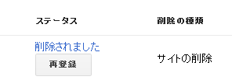
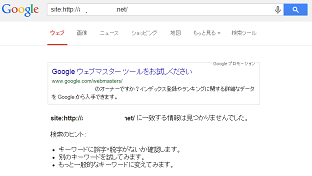
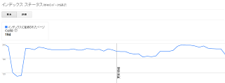

URL削除ツールではインデックスが完全に削除されない
以前、ウェブマスターツールからサイトの削除を送信していたのですが、数週間後ぐらいに確認してみたところ、site検索ではヒットしなくなりました。これでインデックスが削除されたものと思い、そのまま放置していたのですが、どうもそれでは不十分だったみたいです。
本日、久しぶりにウェブマスタールーツにログインしてみたところ、まだインデックス情報が残ったままでいたようなのです。
こちらがURL削除ツールで送信したサイト削除の情報なのですが、

「削除されました」の状態ですので、site検索で検索しても１ページもヒットしません。

けれども、ウェブマスターツールの統計情報では、現在までインデックス数にずっと変化がない状況になっており、194ページも登録されていることになっています。

この意味がよくわからなかったのですが、どうもウェブマスターツールのURL削除ツールでは検索結果には表示されなくなるものの、インデックス情報はずっとそのままになっているみたいです。
つまり、「検索結果に表れない＝インデックス削除」というわけではないものと思われます。（詳細不明。）
ここからは私の勝手な推測になりますが、表には出てこない、隠れインデックスのようなものが存在するのではないかと僕は考えております。
加えて、このURL削除ツールは「90日間だけ有効」みたいなので、それ以降もクローラーがサイトにアクセスできる状態の場合、また復活してしまうみたいです。たぶん、いちいちクロールするのがめんどうだから、とりあえず検索結果には表示しないけど、また何かあったときのために、インデックスしたデータは保存しておくよということなのかもしれません。（こちらも詳細不明。）
ヘルプページによると、完全にURLを削除するには、robots.txtでもアクセスを拒否しておかなくてはいけないもようです。
また、これでも不十分なようでして、できればhtaccessにてパスワードを設定するのが一番いいみたいです。